1. Getting Started1. 快速开始
This section walks you through the full workflow in six steps: open a capture, inspect a packet, edit it, save your changes, and send packets back onto the wire. 本节用六个步骤带你走完整个工作流：打开抓包、查看报文、编辑内容、保存改动，并把报文重新发到网络上。
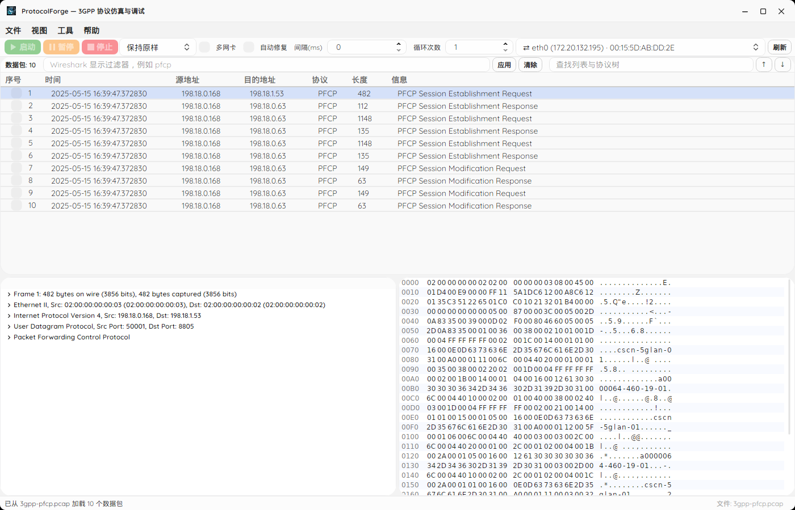
-
Open a capture. Choose File → Open PCAP (Ctrl+O) and pick a
.pcapor.pcapngfile. If you launched the app with a file path on the command line, the capture is already open. 打开抓包。 选择 文件 → 打开 PCAP（Ctrl+O），选中一个.pcap或.pcapng文件。若启动时在命令行传入了文件路径，则抓包已自动打开。 - Select a packet. Click any row in the packet list. The protocol tree and hex viewer populate for that packet. 选中报文。 点击数据包列表中的任意一行，协议树与十六进制视图会为该报文加载内容。
- Inspect. Click a field in the tree to highlight its bytes in the hex viewer; click bytes in the hex viewer to reveal the owning field in the tree. 查看。 在协议树中点击某字段，可在十六进制视图中高亮其字节；在十六进制视图中点击字节，可在协议树中定位其所属字段。
- Edit. Right-click (or double-click) an editable field in the tree and type a new value, or click a byte in the hex viewer and type hex digits. Press Enter to apply, Esc to cancel. 编辑。 在协议树中右键（或双击）可编辑字段并输入新值，或在十六进制视图中点击字节后输入十六进制数字。按 Enter 应用，按 Esc 取消。
- Save or export. Use File → Save PCAP (Ctrl+S) to overwrite, or Export PCAP As (Ctrl+Shift+S) to write a new file. The format follows the extension you choose. 保存或导出。 使用 文件 → 保存 PCAP（Ctrl+S）覆盖保存，或用 导出 PCAP 为…（Ctrl+Shift+S）另存新文件。格式跟随所选扩展名。
- Send. Tick the packets you want, choose a network adapter, set the interval and loop count, then click Start. See Packet Injection. 发送。 勾选要发送的报文，选择网卡，设置间隔与循环次数，然后点击 开始。详见 报文注入。
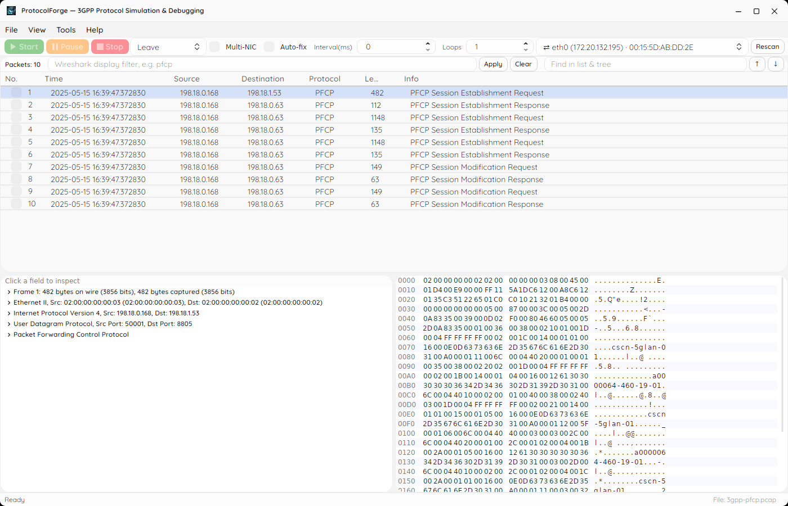
2. Overview & Prerequisites2. 概述与前置条件
ProtocolForge is a cross-platform desktop workbench for 3GPP packet analysis. It runs on Windows, Linux and macOS and combines tshark's dissection engine with a native packet editor and raw-socket injection. The app itself ships no protocol parsers — it delegates all dissection to tshark and layers its own byte-accurate editing and sending on top. ProtocolForge 是一款跨平台的 3GPP 报文分析工作台，可在 Windows、Linux 与 macOS 上运行，将 tshark 的解析引擎与原生报文编辑器、原始套接字注入组合在一起。程序本身不内置任何协议解析器——所有解析都交给 tshark，自身在其之上提供字节级精确的编辑与发送能力。
Prerequisites前置条件
-
Wireshark / tshark (≥ 2.6.0) — the only runtime dependency. tshark must be on your
PATH, or you can point the app at it explicitly (TSHARK_PATHor File → Tshark Path…). Older versions open the app read-only. Wireshark / tshark（≥ 2.6.0）——唯一的运行时依赖。tshark 需位于PATH中，也可手动指定（TSHARK_PATH或 文件 → Tshark 路径…）。版本过低时会以只读模式打开。 - Self-contained builds bundle .NET — end users who install a self-contained release install nothing but Wireshark. No separate .NET runtime is required. 自包含构建已内置 .NET——使用自包含发布版的最终用户除了 Wireshark 之外无需安装任何东西，不需要单独的 .NET 运行时。
- .NET 10 SDK (builders/contributors only) — needed only to compile the app from source. .NET 10 SDK（仅构建者/贡献者需要）——仅在从源码编译时才需要。
Installing tshark安装 tshark
| Platform平台 | How to install安装方式 |
|---|---|
| Windows 10/11 x64Windows 10/11 x64 | Install Wireshark from wireshark.org. Keep the Npcap option enabled (selected by default) to unlock full Ethernet-frame injection. ProtocolForge does not bundle or install Npcap for you.从 wireshark.org 安装 Wireshark。保留 Npcap 选项（默认已勾选），以启用完整的以太网帧注入。ProtocolForge 不会打包或替你安装 Npcap。 |
| Linux | sudo apt install tshark |
| macOS | brew install wireshark |
4. Opening & Ingesting Captures4. 打开与解析抓包
ProtocolForge reads captures with a native C# parser, so the raw bytes of even very large files load quickly without invoking tshark. Supported input is classic PCAP and PCAPNG. ProtocolForge 使用原生 C# 解析器读取抓包，因此即使文件很大，其原始字节也能快速载入，无需调用 tshark。支持的输入格式为经典 PCAP与 PCAPNG。
- Timestamps — both microsecond (µs) and nanosecond (ns) resolution are understood. 时间戳——同时支持微秒（µs）与纳秒（ns）精度。
- Endianness — little-endian and big-endian classic PCAP files both parse correctly. 字节序——小端与大端的经典 PCAP 文件均可正确解析。
- PCAPNG structure — section blocks, interface description blocks and enhanced packet blocks are handled, with per-interface timestamp resolution. PCAPNG 结构——处理节块（SHB）、接口描述块（IDB）与增强报文块（EPB），并按接口分别应用时间戳精度。
Loading happens in two stages. First the raw bytes are ingested natively; then a single streamed tshark pass fills the packet list. This keeps the UI responsive and lets you start working before the list finishes filling. See tshark Integration for details. 载入分为两个阶段：先由原生解析器读入原始字节，再由一次流式 tshark 处理填充数据包列表。这样界面始终保持响应，你可以在列表尚未填充完毕时就开始工作。详见 tshark 集成。
5. tshark Integration & Read-Only Mode5. tshark 集成与只读模式
tshark does all protocol dissection. The app uses it in two modes: one streamed -T fields pass fills the packet list with Source / Destination / Protocol / Info columns, and the protocol detail tree is parsed per-packet on demand with byte-offset accuracy. Because dissectors are never bundled, any protocol Wireshark knows is supported automatically.
所有协议解析都由 tshark 完成。程序以两种方式使用它：一次流式 -T fields 处理填充数据包列表的“源/目的/协议/信息”列；协议详情树则按报文按需解析，并保持字节偏移精确。由于不内置任何解析器，Wireshark 所支持的任何协议都可自动使用。
The version gate版本门禁
On startup and whenever the tshark path changes, ProtocolForge runs tshark -v and compares the reported version against the minimum 2.6.0. If the check fails, editing features are locked; if it passes, full editing is unlocked.
启动时以及每次更改 tshark 路径后，ProtocolForge 都会执行 tshark -v，并将报告的版本与最低要求 2.6.0 比对。若校验失败，编辑功能将被锁定；若通过，则解锁完整编辑能力。
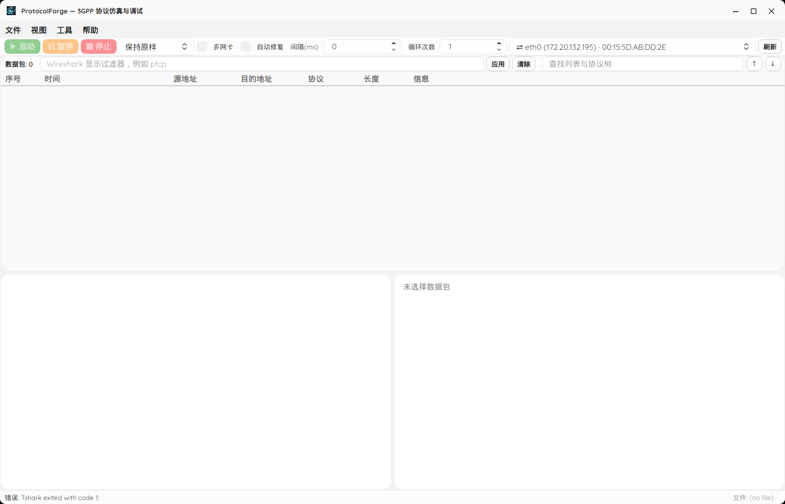
What read-only mode disables只读模式下被禁用的功能
- Tree field editing and inline hex editing.协议树字段编辑与十六进制内联编辑。
- PCAP export (save / export-as).PCAP 导出（保存/另存）。
- Packet injection (send).报文注入（发送）。
The capture still loads: raw packet bytes are shown and the packet list populates, though protocol columns show N/A until a valid tshark is available.
抓包仍会载入：原始报文字节可以显示，数据包列表也会填充，但在具备有效 tshark 之前，协议相关列会显示 N/A。
Lifting the gate解除门禁
Choose File → Tshark Path… and select a valid tshark executable. The app re-detects it and lifts the gate as soon as a passing version is found. The chosen path is persisted across sessions and can be overridden by the TSHARK_PATH environment variable.
选择 文件 → Tshark 路径… 并指定一个有效的 tshark 可执行文件。程序会重新检测，一旦找到符合条件的版本便立即解除门禁。所选路径会跨会话持久化，并可被 TSHARK_PATH 环境变量覆盖。
| Variable环境变量 | Purpose用途 |
|---|---|
TSHARK_PATH | Override the tshark location; auto-detection falls back to PATH and common install paths.覆盖 tshark 位置；自动检测会回退到 PATH 及常见安装路径。 |
6. Language & Theme6. 语言与主题
Bilingual interface双语界面
The entire interface is localized in Simplified Chinese and English. Switch instantly from the 语言 / Language menu (located between View and Help) — no restart, no re-open. Your choice is persisted, and on first run the system locale is auto-detected. 整个界面提供简体中文与英文两种语言。通过 语言 / Language 菜单（位于“视图”与“帮助”之间）即时切换——无需重启，也无需重新打开抓包。所选语言会被保存，首次运行时系统会自动检测系统区域设置。
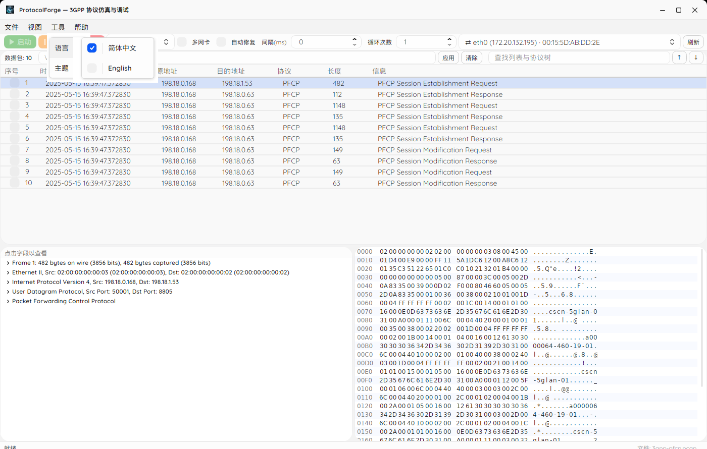
Theming主题
One runtime theming system drives the window chrome, menus and every dock pane. Pick the base from the Theme menu: 统一的运行时主题系统驱动窗口边框、菜单及所有停靠面板。可从主题菜单选择基础外观：
- System — follow the operating system light/dark setting.跟随系统——跟随操作系统的浅色/深色设置。
- Light — always light.浅色——始终为浅色。
- Dark — always dark.深色——始终为深色。
The accent colour is fixed at Blue, and switching is instant with no restart. The choice is persisted. 强调色固定为蓝色，切换即时生效、无需重启，且所选主题会被持久化保存。
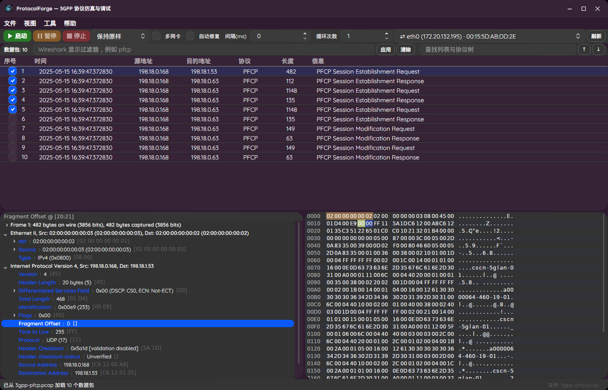
7. Packet List7. 数据包列表
The packet list is a sortable grid. Each row corresponds to one frame and shows its number, source, destination, protocol and a summary Info column. Rows are aligned to the frame numbers tshark reports, accommodating skipped or malformed frames. 数据包列表是一个可排序的表格。每一行对应一个帧，显示其编号、源、目的、协议以及概要“信息”列。各行与 tshark 报告的帧号对齐，可容忍被跳过或格式异常的帧。
- Sorting — click any column header to cycle between ascending and descending order. 排序——点击任意列标题，在升序与降序之间循环切换。
- Auto-fit a column — double-click the divider between two column headers to size that column to its content. All columns support this. 自动列宽——双击两个列标题之间的分隔线，即可让该列宽度自适应内容。所有列均支持。
- Selection — click a row to load its protocol tree and hex bytes in the other panes. 选择——点击某行，即在其他面板中加载其协议树与十六进制字节。
8. Display Filter8. 显示过滤器
The packet-list header has a filter box that accepts a standard tshark display filter (for example pfcp, ip.addr == 10.0.0.1 or gtpv2). The filter is evaluated by tshark, so the grid only ever holds matching packets, and each row keeps the frame number its bytes came from.
数据包列表的头部有一个过滤框，接受标准的 tshark 显示过滤器（例如 pfcp、ip.addr == 10.0.0.1 或 gtpv2）。过滤器由 tshark 求值，因此表格中只保留匹配的报文，且每一行都保留其字节来源的帧号。
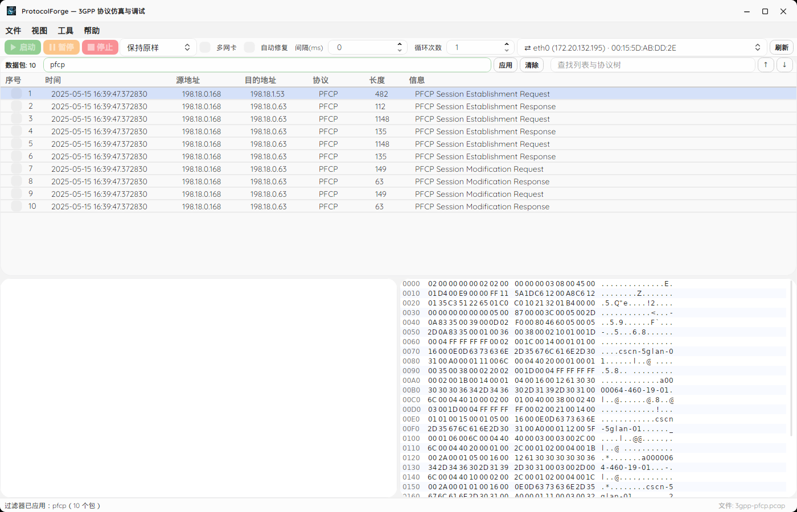
Live validation实时校验
- Green border — the expression parses successfully.绿色边框——表达式解析成功。
- Red border — a syntax error; hover the box to see the reason in a tooltip.红色边框——语法错误；将鼠标悬停在输入框上，可在提示中查看原因。
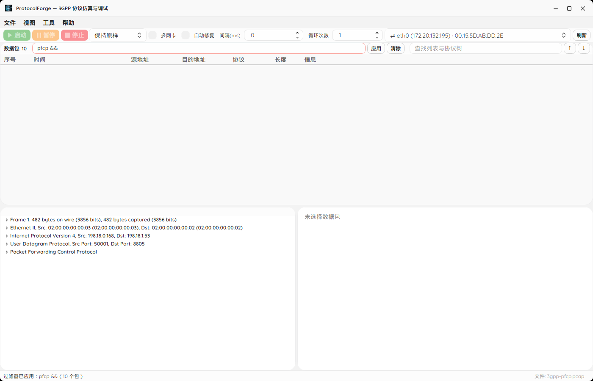
Autocomplete and applying自动补全与应用
As you type, a dropdown autocompletes field and protocol names from tshark's full field catalogue: 输入时，下拉列表会根据 tshark 的完整字段目录自动补全字段名与协议名：
- ↑ / ↓ — move through suggestions.——在候选项中上下移动。
- Tab / Enter — accept the highlighted suggestion.——接受高亮的候选项。
- Esc — dismiss the dropdown.——关闭下拉列表。
Press Enter in the box (or click Apply) to apply the filter. 在输入框中按 Enter（或点击 应用）以应用过滤器。
9. Protocol Tree & Field Editing9. 协议树与字段编辑
The protocol tree shows the selected packet as a hierarchy of protocol layers and Information Elements (IEs). Click any field to highlight the bytes it occupies in the hex viewer. 协议树以协议层与信息元素（IE）的层级结构展示所选报文。点击任意字段，即可在十六进制视图中高亮其占用的字节。
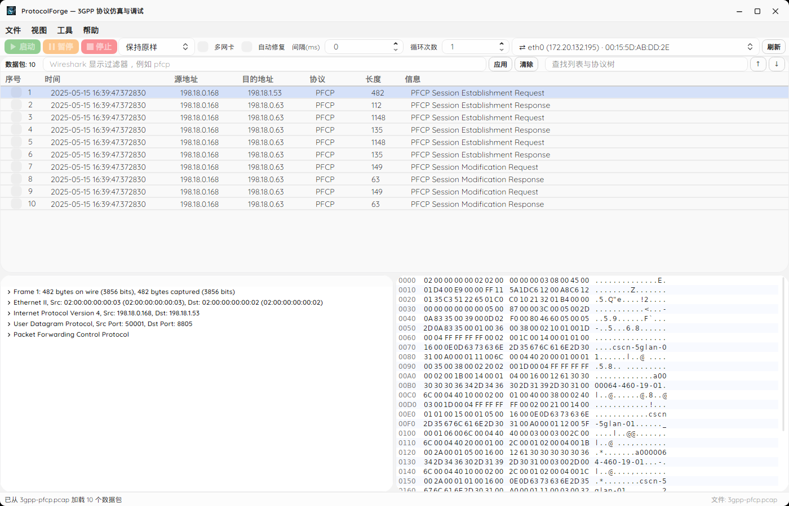
Inline field editing内联字段编辑
Right-click a field (or double-click it) to open an inline editor. Type the value in its natural form and press Enter (or click elsewhere) to apply, or Esc to cancel. Supported value forms: 右键点击字段（或双击）即可打开内联编辑器。以该字段的自然形式输入值，按 Enter（或点击别处）应用，按 Esc 取消。支持的值形式：
- Decimal — e.g.
1234.十进制——例如1234。 - Dotted IP — e.g.
10.0.0.1.点分 IP——例如10.0.0.1。 - MAC address — e.g.
00:1a:2b:3c:4d:5e.MAC 地址——例如00:1a:2b:3c:4d:5e。 - String — plain text.字符串——纯文本。
- Hex — a
0x…-prefixed value.十六进制——以0x…为前缀的值。
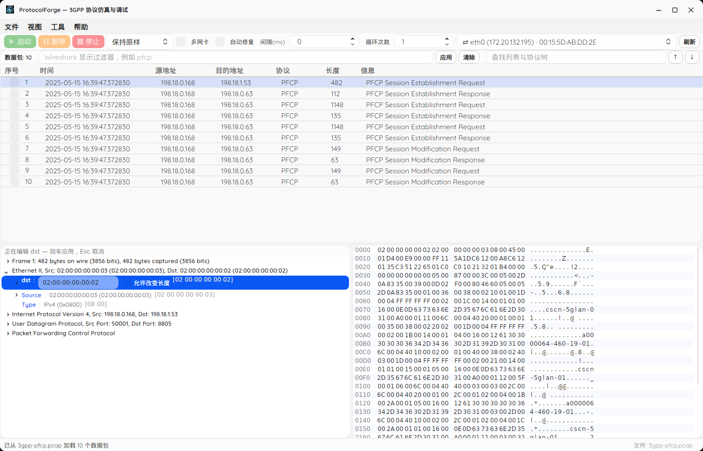
Hex-native fields十六进制原生字段
Fields that Wireshark renders in hexadecimal (for example PFCP SEID / TEID or address ranges) are detected from the 0x… display prefix and edited as hex by default. They round-trip big-endian bytes exactly as tshark displays them.
Wireshark 以十六进制显示的字段（例如 PFCP 的 SEID / TEID 或地址范围）会根据显示值中的 0x… 前缀自动识别，默认按十六进制编辑，并与 tshark 显示的大端字节完全一致地往返。
The edit fence编辑围栏
Not every field can be edited. Before opening an editor, the app runs six checks that must all hold: 并非所有字段都可编辑。打开编辑器之前，程序会执行六项检查，且必须全部满足：
- The field type is resolvable.字段类型可解析。
- The byte span is non-negative.字节范围非负。
- The field is byte-aligned (not a bit-level sub-field).字段按字节对齐（非位级子字段）。
- The span lies inside the frame (fanning into a reassembled PDU fails).范围位于帧内（展开到重组 PDU 的情况不通过）。
- Concrete byte evidence exists (raw byte length matches the field length).存在确切的字节证据（原始字节长度与字段长度一致）。
- The recorded bytes agree with the actual frame bytes (catches masked or offset-drifted values).记录的字节与实际帧字节一致（可捕获被掩码或偏移漂移的值）。
When a field fails, the status area shows Not editable: … with the reason, and no editor opens.
若字段未通过，状态区会显示 Not editable: … 并附带原因，且不会打开编辑器。
10. Verify-Before-Commit & Auto-Relink10. 提交前校验与容器自动回链
A tree field edit is never written straight into the packet. The app uses a Verify-Before-Commit (VBC) transaction so a bad edit cannot silently corrupt your capture. 协议树字段的编辑绝不会直接写入报文。程序采用提交前校验（VBC）事务，确保错误编辑不会悄无声息地破坏你的抓包。
- The candidate frame is written to a temporary PCAP (with surrounding context frames when available).将候选帧写入临时 PCAP（在可用时一并写入前后文帧）。
- tshark re-parses that temp file.由 tshark 重新解析该临时文件。
- The field's new hex value must land at the expected
(PDML name, byte offset)position.字段的新十六进制值必须落在预期的(PDML 名称, 字节偏移)位置上。 - Offset drift, a value mismatch or a length change aborts the commit with a reason — the packet stays byte-identical.若出现偏移漂移、值不匹配或长度变化，则中止提交并给出原因——报文保持逐字节不变。
Hex-pane edits take a separate path: they pass the same edit fence, apply the replace run directly, then trigger the same single-packet reparse to refresh the tree. 十六进制面板的编辑走另一条路径：同样通过编辑围栏后直接应用替换，然后触发相同的单报文重新解析以刷新协议树。
Container auto-relink容器自动回链
After a committed edit, the packet is re-parsed once in the background and the tree's container / layer header texts are patched in place. For example, editing a PFCP SEID immediately refreshes the surrounding F-SEID : SEID: 0x…, IPv4 … display without rebuilding the tree. Matching uses PDML name plus byte offset, falling back to the effective offset for anonymous IE containers.
提交编辑后，报文会在后台重新解析一次，并就地修补协议树的容器/层标题文本。例如，编辑 PFCP 的 SEID 后，周围的 F-SEID : SEID: 0x…, IPv4 … 显示会立即刷新，而无需重建整棵树。匹配依据 PDML 名称加字节偏移，对匿名 IE 容器则回退到有效偏移。
11. Hex Viewer & Hex Editing11. 十六进制视图与编辑
The hex viewer is a Wireshark-style dump: 16 bytes per row with a leading offset column, a hex pane (grouped 8+8 for readability) and an ASCII pane. 十六进制视图采用类似 Wireshark 的转储：每行 16 字节，最左为偏移列，中间为十六进制区（按 8+8 分组以便阅读），右侧为 ASCII 区。
Colours and navigation颜色与导航
- Dark blue — the currently selected bytes.深蓝色——当前选中的字节。
- Protocol colour — the byte range of the focused protocol field.协议颜色——当前聚焦的协议字段的字节范围。
- Orange — bytes you have modified.橙色——你已修改的字节。
Click a cell or use the arrow keys to navigate. 点击单元格或使用方向键进行导航。
Inline hex editing (REPLACE-only)内联十六进制编辑（仅替换）
- Click a byte and start typing hex digits (0–9, A–F or the numeric keypad).点击某个字节，开始输入十六进制数字（0–9、A–F 或数字小键盘）。
- The pending value previews in place with a yellow background (grey ASCII).待定值会就地预览，背景为黄色（ASCII 显示为灰色）。
- Press Enter to commit the whole run as a single replace; Esc cancels.按 Enter 将整段作为一次替换提交；按 Esc 取消。
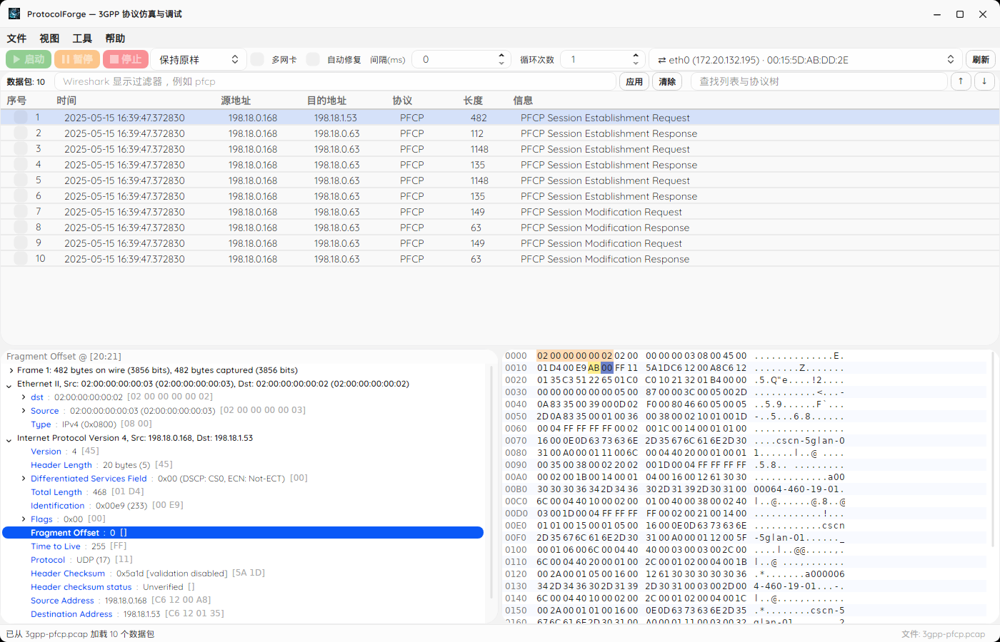
12. Tree ↔ Hex Sync & Re-extraction12. 树与十六进制联动及地址重提取
The two panes are linked in both directions: 两个面板双向联动：
- Tree → Hex — clicking a field in the protocol tree highlights its byte range in the hex viewer.树 → 十六进制——在协议树中点击字段，会在十六进制视图中高亮其字节范围。
- Hex → Tree — selecting or editing bytes in the hex pane resolves the owning field and scrolls to plus selects the matching node in the tree, rather than rebuilding it.十六进制 → 树——在十六进制面板中选择或编辑字节，会解析其所属字段，并滚动到协议树中对应的节点并将其选中，而不是重建整棵树。
Address / port re-extraction: after byte edits, IP addresses and port numbers are automatically re-parsed from the modified bytes and reflected in the packet-list columns. 地址/端口重提取：字节编辑之后，程序会自动从修改后的字节重新解析 IP 地址与端口号，并反映到数据包列表的列中。
13. Undo / Redo13. 撤销 / 重做
Committed edits are tracked as whole-frame snapshots, so you can step back and forward through your changes. 已提交的编辑以整帧快照的形式记录，因此你可以逐步回退与前进查看改动。
- Ctrl+Z — undo the last committed edit.——撤销最近一次提交的编辑。
- Ctrl+Y — redo.——重做。
History is capped, so very long editing sessions keep only the most recent changes. 历史记录有容量上限，因此超长时间的编辑会话只保留最近的若干次改动。
14. Saving & Exporting14. 保存与导出
| Action操作 | Shortcut快捷键 | Behaviour行为 |
|---|---|---|
| Save PCAP保存 PCAP | Ctrl+S | Overwrite the current file with all modifications.用全部改动覆盖保存当前文件。 |
| Export PCAP As导出 PCAP 为… | Ctrl+Shift+S | Write to a new path; the output format follows the extension you choose.另存到新路径；输出格式跟随所选扩展名。 |
- Format follows extension — a
.pcaptarget writes classic PCAP; a.pcapngtarget writes PCAPNG.格式跟随扩展名——目标为.pcap时写出经典 PCAP；目标为.pcapng时写出 PCAPNG。 - PCAPNG write-back — when a capture was opened as
.pcapng, saving preserves the interface description, snaplen and timestamp resolution.PCAPNG 回写——当抓包以.pcapng打开时，保存会保留接口描述、快照长度与时间戳精度。 - Unsaved-changes warning — closing the app or opening another file with pending edits prompts you first.未保存改动提醒——在有未保存编辑时关闭程序或打开其他文件，会先弹出提醒。
15. Selecting Packets & Send History15. 选择报文与发送历史
Every packet row has a checkbox, so you control exactly which frames are injected. You can also right-click the packet list for bulk actions. 每个报文行都有一个复选框，让你精确控制哪些帧会被注入。你也可以右键点击数据包列表执行批量操作。
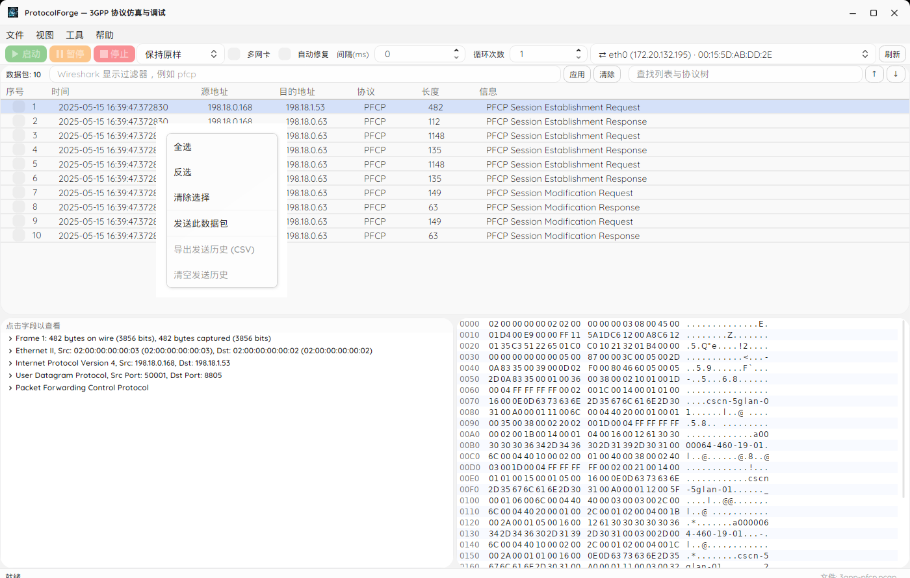
| Command命令 | Effect作用 |
|---|---|
| Select All全选 | Tick every packet.勾选全部报文。 |
| Invert反选 | Flip every packet's checkbox.反转每个报文的勾选状态。 |
| Clear清除 | Untick every packet.取消全部勾选。 |
| Send Selected发送所选 | Inject the ticked packets.注入已勾选的报文。 |
Send history发送历史
Per-packet send results are kept for the whole run instead of only showing the most recent one. You can export the history as CSV from the packet-list context menu. 每个报文的发送结果会整场运行保留，而非只显示最近一条。你可以从数据包列表右键菜单将发送历史导出为 CSV。
16. Packet Injection16. 报文注入
The send toolbar drives injection through a probe-and-fallthrough rung ladder. The app probes the native L2 path once per session, then tries rungs in order, descending when a rung cannot deliver. 发送工具栏通过“探测并逐级回退”的发送阶梯来驱动注入。程序每会话探测一次原生二层路径，然后按顺序尝试各级，某级无法发送时自动降级。
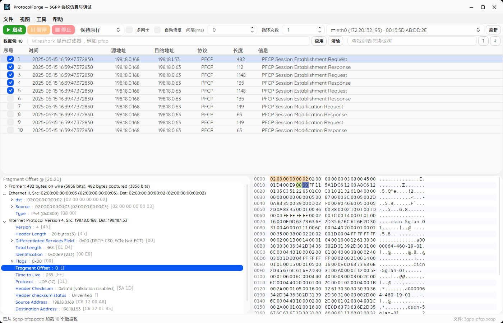
The rung ladder发送阶梯
| Rung层级 | Platform平台 | Sends发送内容 | Notes说明 |
|---|---|---|---|
| 0. Npcap / BPF | Windows / macOS | Complete Ethernet frames完整以太网帧 | Optional native L2 path; silently skipped when unavailable.可选的原生二层路径；不可用时静默跳过。 |
| 1. AF_PACKET | Linux | Complete Ethernet frames完整以太网帧 | Raw socket; needs root / CAP_NET_RAW.原始套接字；需要 root / CAP_NET_RAW。 |
| 2. IP raw socket | All platforms全平台 | IP datagramsIP 数据报 | Needs admin / root.需要管理员 / root 权限。 |
| 3. UDP socket | All platforms全平台 | UDP payload only仅 UDP 载荷 | Always works; no privileges required.始终可用；无需任何权限。 |
Toolbar controls工具栏控件
- Start / Pause / Stop — control the send run.开始 / 暂停 / 停止——控制发送进程。
- Network adapter — pick the interface to send through. The source address is rewritten to the selected interface's own when Auto-fix is on.网卡——选择发送所用接口。启用自动修复时，源地址会被改写为该接口自身的地址。
- Interval (ms) — delay between packets; 0 sends as fast as possible.间隔（毫秒）——报文之间的延迟；为 0 时尽快发送。
- Loop count — how many times the selected packets are sent.循环次数——所选报文的发送遍数。
- Auto-fix — repairs IPv4/IPv6 and TCP/UDP checksums before injection and rewrites the source address. Off by default.自动修复——注入前修复 IPv4/IPv6 与 TCP/UDP 校验和，并改写源地址。默认关闭。
- Sent / failed counters and status bar — live progress and per-packet results.已发送/失败计数器与状态栏——实时进度与逐包结果。
17. Dockable Layout17. 可停靠布局
The packet list, protocol tree and hex editor are panes of a Visual-Studio-style dock. You can arrange the workspace to suit the task: 数据包列表、协议树与十六进制视图都是 Visual Studio 风格停靠面板。你可以按任务需要自由排布工作区：
- Drag a pane header to re-dock it elsewhere.拖动面板标题栏，将其重新停靠到别处。
- Group panes as tabs.将面板组合为标签页。
- Float a pane in its own window.将面板浮动为独立窗口。
- Close a pane and re-open it from the View menu.关闭面板后，可从视图菜单重新打开。
Layout persistence布局持久化
Two files under the application data folder remember your workspace between launches: 应用程序数据文件夹下的两个文件会在两次启动之间记住你的工作区：
| File文件 | Contents内容 |
|---|---|
layout.json | Window geometry and pane-visibility flags.窗口几何尺寸与面板可见性标志。 |
docklayout.json | The serialized dock tree (pane arrangement).序列化的停靠树（面板排布）。 |
Locations: %APPDATA%/ProtocolForge/ on Windows, ~/.config/ProtocolForge/ on Linux, ~/Library/Application Support/ProtocolForge/ on macOS.
位置：Windows 为 %APPDATA%/ProtocolForge/，Linux 为 ~/.config/ProtocolForge/，macOS 为 ~/Library/Application Support/ProtocolForge/。
18. Find18. 查找
Find searches the packet-list columns and the selected packet's protocol tree, in either direction: 查找可在数据包列表各列以及所选报文的协议树中搜索，支持双向：
- Forward / backward — move to the next or previous match.向前 / 向后——移动到下一个或上一个匹配项。
- Tree hits — a match in the tree is expanded and revealed, rather than rebuilding the tree.协议树命中——树中的匹配项会被展开并显示，而不是重建整棵树。
19. Keyboard Shortcuts19. 键盘快捷键
| Shortcut快捷键 | Action操作 |
|---|---|
| Ctrl+O | Open PCAP打开 PCAP |
| Ctrl+S | Save PCAP (overwrite)保存 PCAP（覆盖） |
| Ctrl+Shift+S | Export PCAP As导出 PCAP 为… |
| Ctrl+Z | Undo撤销 |
| Ctrl+Y | Redo重做 |
| Enter | Apply the current inline edit (tree or hex)应用当前内联编辑（协议树或十六进制） |
| Esc | Cancel the current inline edit取消当前内联编辑 |
| ↑ / ↓ | Move through filter autocomplete suggestions; navigate hex cells在过滤器自动补全候选中移动；在十六进制单元格间导航 |
| Tab | Accept the highlighted filter suggestion接受高亮的过滤器候选 |
Appendix A — Headless CLI附录 A — 命令行工具
The same engine is available without a GUI for CI and batch use. Edits go through the same Verify-Before-Commit transaction as the GUI. Exit codes: 0 success, 1 failure or aborted VBC, 2 usage error. See docs/pfcheck-cli.md for the full reference.
同一套引擎也可在无图形界面下用于 CI 与批处理。编辑走与界面完全相同的提交前校验事务。退出码：0 成功，1 失败或 VBC 中止，2 参数用法错误。完整参考见 docs/pfcheck-cli.md。
ProtocolForge validate <capture.pcap> [--filter <display-filter>]
ProtocolForge edit <capture.pcap> --offset <n> --length <n> --hex <hex> --out <out.pcap> [--packet <n>]
ProtocolForge send <capture.pcap> --interface <name> [--count <n>] [--interval <ms>] [--all] [--filter <display-filter>]
ProtocolForge stats <capture.pcap> --tap <tap> [--filter <display-filter>]| Command命令 | Purpose用途 |
|---|---|
validate | Open a capture, report metadata, and dissect the first frame to prove the pipeline works.打开抓包、报告元数据，并解析首帧以证明解析链路可用。 |
edit | Rewrite bytes at an offset; must pass VBC.按偏移改写字节；必须通过 VBC 校验。 |
send | Inject through the send ladder; supports interface, count, interval and filter.经发送阶梯注入；支持网卡、次数、间隔与过滤器。 |
stats | Run a tshark analysis tap and print its raw output.运行一个 tshark 分析 tap 并原样输出。 |
Appendix B — Protocols & Logs附录 B — 协议与日志
Supported protocols支持的协议
Because dissection is delegated to tshark, ProtocolForge supports any protocol your installed Wireshark knows. Common 3GPP and transport protocols include: 由于解析交由 tshark 完成，ProtocolForge 支持你所安装的 Wireshark 能识别的任何协议。常见的 3GPP 与传输协议包括：
PFCP NGAP GTP-U NAS S1AP Diameter HTTP/2 SCTP …and more ……等
Trace log跟踪日志
Runtime diagnostics are written to trace.log under the local application data folder. It records packet loads, selections and send activity — consult it when investigating behavioural issues.
运行时诊断信息写入本地应用程序数据文件夹下的 trace.log。它记录报文加载、选择与发送活动——排查行为问题时请查阅它。
| Platform平台 | trace.log locationtrace.log 位置 |
|---|---|
| Windows | %LOCALAPPDATA%/ProtocolForge/logs/trace.log |
| Linux | ~/.local/share/ProtocolForge/logs/trace.log |
| macOS | ~/Library/Application Support/ProtocolForge/logs/trace.log |
Troubleshooting / FAQ故障排查 / 常见问题
- The window opens but editing, export and send are greyed out. Why?窗口打开了，但编辑、导出与发送都是灰色不可用，为什么？
-
You are in read-only mode, which happens when tshark is missing or older than 2.6.0. Install or update Wireshark, then open File → Tshark Path… and pick the valid tshark executable — the gate lifts as soon as it passes the version check. You can also set the
TSHARK_PATHenvironment variable. 你正处于只读模式，这通常发生在 tshark 缺失或版本低于 2.6.0 时。请安装或更新 Wireshark，然后打开 文件 → Tshark 路径… 并选择有效的 tshark 可执行文件——一旦通过版本校验，门禁会立即解除。你也可以设置TSHARK_PATH环境变量。 - The filter box has a red border. What is wrong?过滤器输入框显示红色边框，哪里出问题了？
- The expression failed to parse as a tshark display filter. Hover the box to read the reason in the tooltip, fix the syntax, and press Enter or Apply again. A green border means the filter is valid. 该表达式无法作为 tshark 显示过滤器解析。将鼠标悬停在输入框上查看提示中的原因，修正语法后再次按 Enter 或点击 应用。绿色边框表示过滤器有效。
- A field refuses to open an editor and says "Not editable: …".某字段拒绝打开编辑器并提示 “Not editable: …”。
- The field failed one of the six edit-fence checks (for example it is a bit-level sub-field, or its recorded bytes no longer agree with the frame). The reason after the colon explains which check failed. Such fields cannot be edited safely and are blocked by design. 该字段未通过六项编辑围栏检查中的某一项（例如它是位级子字段，或其记录的字节已与帧不一致）。冒号后的原因会说明是哪一项未通过。此类字段无法安全编辑，因此按设计被阻止。
- My edit was rejected even though the value looks fine.值看起来没问题，但编辑却被拒绝了。
- Verify-Before-Commit re-parses the candidate frame and requires the new value to land at the expected field name and byte offset. If tshark dissects the frame differently after the change — offset drift, a value mismatch or a length change — the commit is aborted and the packet is left byte-identical. Adjust the value so it dissects consistently, or edit the bytes directly in the hex viewer. 提交前校验会重新解析候选帧，并要求新值落在预期的字段名与字节偏移上。若改动后 tshark 的解析结果发生变化——偏移漂移、值不匹配或长度变化——提交会被中止，报文保持逐字节不变。请调整取值使其能一致地解析，或直接在十六进制视图中编辑字节。
- Sending fails, or packets never appear on the wire.发送失败，或报文根本没有出现在网络上。
- High rungs need privileges and a suitable adapter. Run with elevated privileges (root / CAP_NET_RAW / admin), confirm Npcap is installed on Windows, and make sure the selected interface is a physical (non-loopback) adapter. Without privileges the app falls back to UDP, which sends only the payload and drops the outer headers. Check the sent/failed counters and the status bar for the per-packet outcome. 高层级需要权限与合适的网卡。请以提升的权限运行（root / CAP_NET_RAW / 管理员），确认 Windows 上已安装 Npcap，并确保所选接口是物理（非回环）网卡。若无相应权限，程序会回退到 UDP，仅发送载荷并丢弃外层首部。请查看已发送/失败计数器与状态栏以了解逐包结果。
- Where are the logs?日志在哪里？
-
In
trace.logunder the local application data folder:%LOCALAPPDATA%/ProtocolForge/logs/(Windows),~/.local/share/ProtocolForge/logs/(Linux) or~/Library/Application Support/ProtocolForge/logs/(macOS). Help → Open Support Data Folder takes you straight there. 位于本地应用程序数据文件夹下的trace.log：Windows 为%LOCALAPPDATA%/ProtocolForge/logs/，Linux 为~/.local/share/ProtocolForge/logs/，macOS 为~/Library/Application Support/ProtocolForge/logs/。帮助 → 打开支持数据文件夹 可直接带你前往该位置。